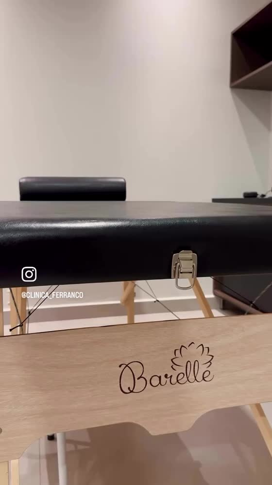

Saúde, cuidado e segurança em primeiro lugar.
Medicina do Trabalho e Acupuntura Médica em Itumbiara.
- Medicina do Trabalho
- Acupuntura Médica
- Atendimento para Empresas
- Atendimento Humanizado
Conheça a Clínica Ferranco
A Clínica Ferranco oferece atendimento médico com foco em saúde, prevenção e qualidade de vida, reunindo serviços de Medicina do Trabalho e Acupuntura Médica em Itumbiara.
Nossos Serviços
Medicina do Trabalho
Soluções voltadas à promoção, prevenção e acompanhamento da saúde ocupacional.
SAIBA MAISAcupuntura Médica
Atendimento médico individualizado com foco em bem-estar, equilíbrio e qualidade de vida.
SAIBA MAISAtendimento Empresarial
Soluções de saúde ocupacional para empresas e seus colaboradores.
FALAR COM A CLÍNICAMedicina do Trabalho
Cuidar da saúde dos seus colaboradores é investir no sucesso da sua empresa.
Saúde ocupacional
Promoção e prevenção da saúde no ambiente de trabalho.
Avaliações ocupacionais
Avaliações médicas voltadas à rotina de trabalho.
Acompanhamento dos colaboradores
Cuidado contínuo com a saúde da equipe.
Atendimento para empresas
Suporte a RH e gestores nas demandas de saúde ocupacional.
Sua empresa precisa de atendimento em Medicina do Trabalho?
SOLICITAR ATENDIMENTOConvênios
Consulte disponibilidade e condições de atendimento diretamente com a clínica.
Acupuntura Médica
Um atendimento individualizado voltado ao cuidado, equilíbrio e qualidade de vida.

Soluções para sua empresa
Conte com a Clínica Ferranco para apoiar os cuidados com a saúde dos seus colaboradores.
FALAR COM A FERRANCOEntre em contato
Preencha o formulário e sua solicitação será enviada pelo WhatsApp da clínica.